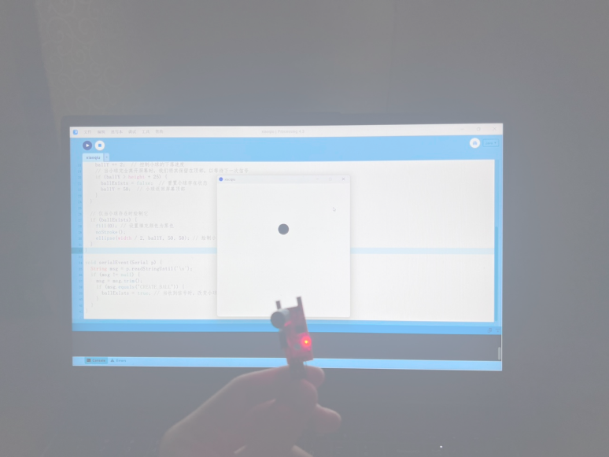
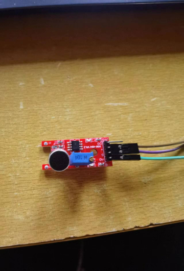
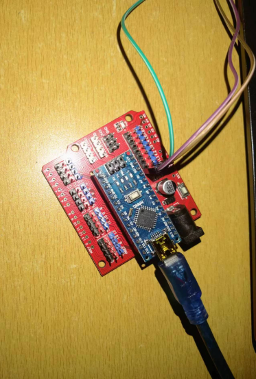

4.Arduino input
Linking the processing and Arduino, the signal input from the Arduino port
is used to control the falling and not falling of the small ball on the
processing side of the screen.
Code—Arduino
const int sensorPin = A0; //The sound sensor interface is set to A0.
int pulseValue = 0; // Store the pulse values read from the storage
device.
void setup() {
Serial.begin(9600); // Initialize serial communication.
}
void loop() {
pulseValue = analogRead (sensorPin ); // Read the pulse values from the
sound sensor.
if (pulseValue > 1000) {
Serial.println("CREATE_BALL"); // Send the instruction when
the pulse value is greater than 1000.
delay(5000); // Delay to avoid repeating instructions
}
code performs the detection and output of the pulse signal value. Firstly
the detected pulse value is given to the variable pulseValue, if the
detected pulse value is greater than 1000, then a signal is sent to the
processing. A delay signal of 5000 is set to avoid sending the signal
repeatedly.
Code—Processing
import processing.serial.*;
Serial myPort; // Declare serial object
boolean ballExists = false; // A sign that controls the presence or
absence of the ball
float ballY; // Ball Y coordinate
void setup() {
size(600, 600); // Set window size
ballY = 50; // Initially, the ball is at the top of the screen (visible
range)
String portName = Serial.list()[0];
myPort = new Serial(this, portName, 9600);
}
void draw() {
background(255); // Set the background color to white
if (ballExists) {
ballY += 2; // Control the ball's falling speed
// When the ball leaves the screen completely, we keep it at the top to
wait for the next signal
if (ballY > height + 25) {
ballExists = false; // Reset the presence state of the ball
ballY = 50; // The ball returns to the top of the screen
}
}
// Draw the ball only if it is present
if (ballExists) {
fill(0); // Set the fill color to black
noStroke();
ellipse(width / 2, ballY, 50, 50); // Draw ball
}
}
void serialEvent(Serial p) {
String msg = p.readStringUntil('\n');
if (msg != null) {
msg = msg.trim();
if (msg.equals("CREATE_BALL")) {
ballExists = true; // When the signal is received, change the state of
the ball so that it begins to fall
}
}
}
On the Processing side, the variable ballExists is defined to detect the
existence of the ball and to facilitate the signal input to generate the
ball. In the first round of the program, set the display window size, then
set the height of the ball generation, and then declare the input port to
link with the Arduino.For the second round of the program, first define the
background color as white. The ball is then dropped through a loop
statement, and if the ball falls completely off the screen, the height of
the ball is reset to allow it to re-generate at the top again. At the same
time, the ball is only drawn when Processing receives a pulse value greater
than 1000.The third program, on the other hand, makes a determination in
Processing again, but it only generates the ball and lets it fall when it
receives a signal from the Arduino.

*Component
1.Arduino Nano board
2.Acoustic sensor
src="images/_9-ee-400-d-978423-de-4957-df-734411-bc-68-20.png"

